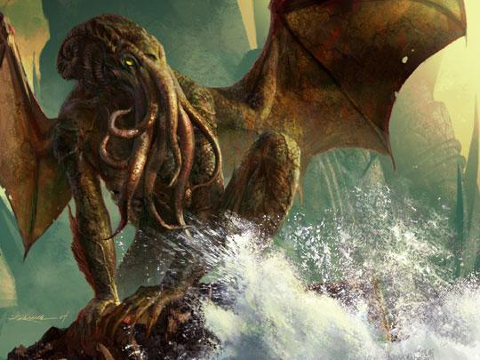

The Elder Ones Want You!
We are here to represent the Church of the Elder Gods. Consider this an invitation to our brother and sisterhood of worship. Here, you will find more information on some of these elder beings that we worship.
The first of which is our lord and dreaming savior.
Cthulhu
Here he is, our glorious dweller of the deep.
Now, you may be asking yourself, why would I want to take time out of my day to give thanks and worship a diety who is dead and who may be slowly getting ready to kill us all in waves upon waves of maddening torment and insanity. Well, first off, that is truly a damn good question. Second, it is to stave off his impending wrath and to find favor in his infinite rage. Through Cthulhu you may find salvation and a bottomless hunger. You can be transformed into one of his acolytes to spread his terror throughout the lands far and wide. It is through him that you are able to make the impossible seem improbable, and it is through the teachings from the antiquarian volumes that we have in our possesion that can make this a possibility for you.
Just remember, in life you do not needs friends, family, or wealth. You only need Cthulhu. Ia! Ia! Cthulhu Fatghn Ia Ia!
If interested in joining us please send a check or money order to the Broken Ferry off of Innsmouth Cove, two blocks down from the cannery. We'll find and contact you shortly thereafter.